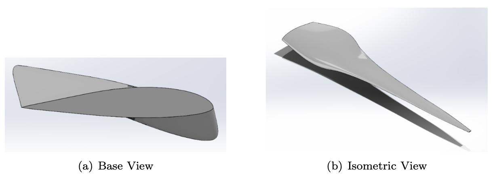

NGIS Capstone

For this capstone project, I was elected team lead for a group of five students collaborating with Northrop Grumman Innovation Systems (NGIS). NGIS conducts thermal chamber testing for spacecraft components but faces challenges maintaining visual monitoring during extreme conditions. Our objective is to design a camera housing that enables off-the-shelf cameras to operate in spacecraft environments, withstanding temperatures from –180°C to +130°C and pressures down to 10⁻⁴ torr.
This quarter, our focus is on research and concept development leading to a functional prototype. We are working closely with NGIS engineers, our faculty advisor, and teaching assistant to ensure technical accuracy and project success. The final design will be presented at the UCSB Capstone Fair next year, where we aim to showcase a professional, high performing solution.
Automatic Window Washer

This project began as a concept to eliminate the safety risks faced by human window washers working on skyscrapers. However, after researching existing commercial solutions, we shifted focus to create a more practical and impactful product: an automated window washing system for residential homes. The goal was to design a permanent, cost effective system that could be installed once and save homeowners thousands of dollars in window cleaning services over time.
Our final design utilized a T-bar gantry mechanism, driven by a stepper motor and motor driver, to move the cleaning module across the window’s surface both horizontally and vertically. We developed multiple iterations of the wiper and rail system, using CAD modeling (SolidWorks) and 3D printed prototypes to test and refine functionality.
My primary role was leading the design of the fluid dispensing system. This involved:
- Calculating the required flow rate and nozzle pressure for effective coverage.
- Analyzing head loss through the tubing to select an appropriate pump.
- Integrating the fluid system with the motion system to ensure synchronized cleaning action.
One of the major challenges was balancing compactness with mechanical stability, particularly as we scaled down the design for residential window sizes. The team iterated on bracket designs, friction reduction techniques, and water flow control to optimize performance.
We presented our working physical prototype at the UCSB Junior Design Fair, where we demonstrated the engineering process and final product to peers, faculty, and industry professionals. The project showcased not only our technical capabilities, but also our ability to adapt the problem scope based on research and market viability.
Airfoil Optimization
As part of a three person team, I led the mechanical analysis and modeling of a horizontal-axis wind turbine blade optimized for 12 m/s rated wind speed. We used the S8037 airfoil to design a four blade rotor system with a 50 meter diameter and a tip speed ratio of 6.
- Used MATLAB to perform aerodynamic calculations, including Reynolds number estimation, chord and pitch optimization, and axial induction factor distribution.
- Developed and integrated Blade Element Momentum theory to calculate power, torque, and thrust coefficients, validating convergence through iterative modeling.
- Designed and refined the 3D turbine blade in SolidWorks, then scaled the model for physical stress testing under different material and wind conditions.
- Conducted simulations to determine critical deflection wind speed and root bending moment, using ABS plastic as a scale model material.
- Modeled turbine wake behavior using Park, Revised Park, and Entrainment models to assess array performance for a 10 turbine farm layout.
This project strengthened my fluency in aerodynamic modeling and mechanical simulation, and deepened my interest in sustainable power generation and energy system optimization.
Coding Projects (MATLAB and Python)
The Billiard Simulation Project simulates the motion and collision dynamics of two balls (one blue and one red) in a confined space using MATLAB. The simulation takes into account various forces, including gravity, drag, and friction, to model the motion of the balls. It calculates the velocities, positions, and collision responses of the balls when they hit walls or each other, accounting for energy loss due to damping and friction.
I developed the collision detection and velocity response system using physics based algorithms, ensuring that both energy loss and momentum conservation were accounted for.
Rep Counter
For my design class, I maintained a comprehensive record of all my projects, including drawings, sketches, invention ideas, circuitry, SolidWorks designs, and the final project. The final project, which won the "Most Technical Project" award in the class, is showcased on pages 31–38 of the design portfolio, accompanied by a working video demonstration.
Air Motor
In this project, I designed and built a fully operational air motor, utilizing a range of machining tools and techniques. I operated band saws for cutting raw stock and used Haas vertical mills to precisely cut and drill key motor components. Additionally, I demonstrated machining proficiency by working with lathes to shape, sand, and drill spherical components.
After assembly, I achieved an air motor speed of 2800 RPM, surpassing the expected performance by 400 RPM. I conducted thorough performance tests to ensure the motor met all design specifications and ran efficiently. Throughout the project, I documented the process, including design iterations and troubleshooting, providing a comprehensive record of the build.